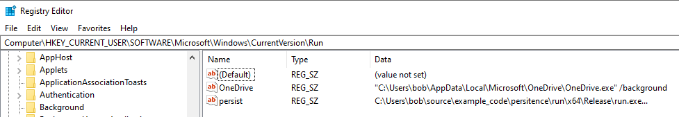
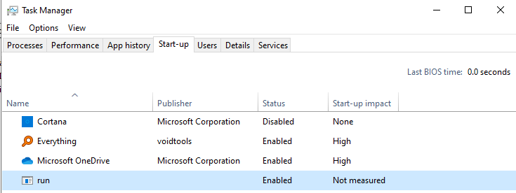

# Run & RunOnce
•
https://attack.mitre.org/beta/techniques/T1547/001/•
https://docs.microsoft.com/en-us/windows/win32/setupapi/run-and-runonce-registry-keysThis persistence mechanism is super common.
Run keys run on every boot.
RunOnce executes and then clears the registry key.
Values in the
Software\Microsoft\Windows\CurrentVersion\Run key run when a user logs in.
Run keys exists in both
HKEY_LOCAL_MACHINE and
HKEY_CURRENT_USER.
Locations:
HKEY_LOCAL_MACHINE\Software\Microsoft\Windows\CurrentVersion\Run
HKEY_LOCAL_MACHINE\Software\Microsoft\Windows\CurrentVersion\RunOnce
HKEY_CURRENT_USER\Software\Microsoft\Windows\CurrentVersion\Run
HKEY_CURRENT_USER\Software\Microsoft\Windows\CurrentVersion\RunOnce
HKEY_LOCAL_MACHINE has 32bit and 64bit registry sections.
• A 32bit exe on a 64bit system will write to:
◇
HKEY_LOCAL_MACHINE\Software\WOW6432Node\Microsoft\Windows\CurrentVersion\Run• A 64bit exe on 64bit system will write to:
◇
HKEY_LOCAL_MACHINE\Software\Microsoft\Windows\CurrentVersion\RunRun keys are ignored when the computer is started in safe mode.
## Observations
When set, the value can be found in the Windows 10
Task Manager > Start-up tab.
## cmdline
reg add "HKLM\SOFTWARE\Microsoft\Windows\CurrentVersion\Run" /v "Hello" /t REG_SZ /d "C:\Users\Bob\Desktop\hello_world.exe" /f## Code
/*
Compiled on Windows 10 x64 in Visual Studio 2019 as x64 Release
*/
#include <stdio.h>
#include <Windows.h>
int main(void)
{
LSTATUS lstat_ret = 0;
HKEY h_key = NULL;
char exe_path[MAX_PATH] = { 0 };
// get path to current exe
GetModuleFileNameA(NULL, exe_path, MAX_PATH);
// create key
lstat_ret = RegCreateKeyA(HKEY_CURRENT_USER, "Software\\Microsoft\\Windows\\CurrentVersion\\Run", &h_key);
if (lstat_ret != ERROR_SUCCESS)
return 1;
// set Run key
lstat_ret = RegSetValueExA(h_key, "persist", 0, REG_SZ, (BYTE*)exe_path, sizeof(exe_path));
if (lstat_ret != ERROR_SUCCESS)
return 2;
printf("Hello, world! \n");
getchar();
return 0;
}